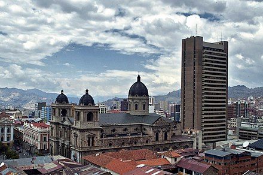

La ciudad de La Paz, oficialmente
Nuestra Señora de La Paz, es la sede de gobierno de
Bolivia. Es el centro político, financiero, social, académico y cultural
más importante del país, además de ser la ciudad con mayor nivel de
desarrollo sostenible en Bolivia. Con una población estimada de 940 000
habitantes (en 2020).

Catedral (Foto: Juan Perez)
La Paz se encuentre ubicada en el oeste de Bolivia, a 68 km al sureste
del lago Titicaca, La Paz está situada en un cañón creado por el río
Choqueyapu y está rodeada por las altas montañas del altiplano, entre
ellas el nevado Illimani, cuya silueta ha sido un emblema importante de
la ciudad desde su fundación.
A una altura promedio de 3650 m s. n. m., La Paz es la metrópoli más
alta del mundo. Esta característica junto a la topografía accidentada de
la urbe ofrecen vistas únicas de la cordillera Real.
Sede de Gobierno
La Paz alberga el
- Palacio Quemado
- Casa Grande del Pueblo
La Paz se convirtió oficialmente en la sede de los poderes:
- Poder ejecutivo,
- Palacio de la Asamblea Legislativa Plurinacional,
- Poder legislativo,
- Tribunal Supremo Electoral
y la vasta mayoría de las entidades gubernamentales.
En La Paz se encuentran asentadas la totalidad de misiones diplomáticas
acreditadas en Bolivia. La Paz es considerada como una de las Nuevas
siete ciudades maravillas del mundo
Características
El centro de la ciudad de La Paz posee tres puntos principales en los
que se desarrolla gran parte de la vida económica y social de la ciudad.
Estos puntos son:
Plaza del Obelisco, en el centro de La Paz.
El Palacio Legislativo de Bolivia, en la plaza Murillo. Kilómetro cero
El atrio de la Basílica de San Francisco
Si te encuentras en el Aeropuerto de Internacional del El Alto y quiere
llegar a la Casa Grande del Pueblo, debes seguir los siguientes pasos:
- Tomar una movilidad de la puerta del aeropuerto
-
Una vez que llegue hasta la Perez Velazco. Caminar y subir el puente …
- Caminar dos cuadras por la calle comercio
- Disfruta de la tranquilidad de la Plaza Murillo